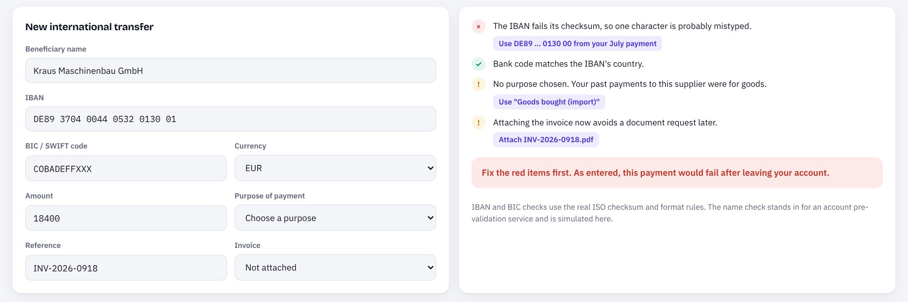
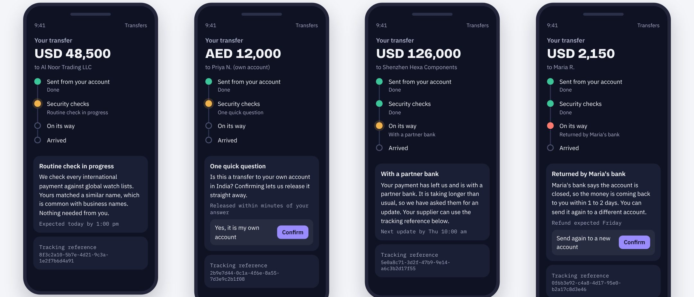
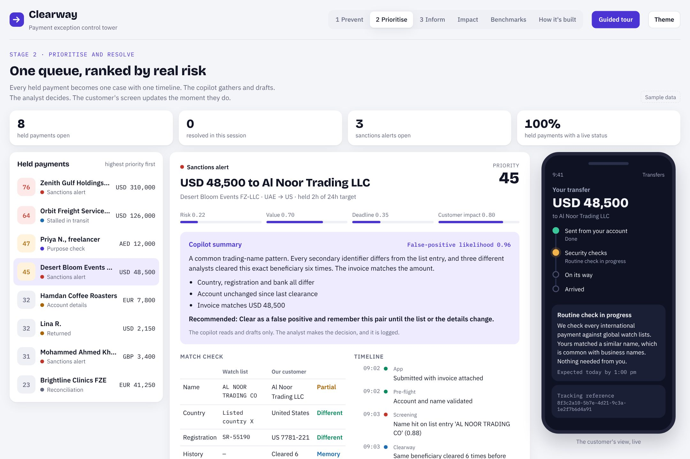

Clearway: how Wio can find, rank and resolve payment issues earlier, and keep every customer at ease while it happens.
Payments that need a human sit in silence. Operations and Compliance work across many systems, and the customer finds out last.
Trace every held payment end to end by its tracking reference (UETR), and size the causes before designing anything.
Bad data is caught too late. Screening has no memory. Nobody owns the payment journey end to end.
Clearway: Prevent, Prioritise and Inform on one shared timeline, using rules, machine learning and an AI copilot where each fits best. People keep every decision. About half of manual hours freed at my assumed volumes.
Discover, Design, Pilot, Scale. First 30 days: a baseline, checks at entry, one-question requests, and proactive updates.
We pack it, label it and send it. It then passes checkpoints we do not run. If the address is wrong, the label is vague, or the sender's name looks like someone on a watch list, the parcel goes on a shelf. Someone then writes to the sender to ask what is inside. Meanwhile the sender sees "processing" and wonders where their money went.
Experience, trust, clarity, effort
Effort, complexity, rework, risk
Cost, growth, revenue, risk, brand
The constraint that shapes everything: we cannot loosen controls. The answer has to be smarter controls, not fewer controls.
| Customers | 270k+ personal, 120k businesses, 10k+ families |
| Scale | About AED 61bn in assets, AED 1.24bn revenue (2025) |
| Cross-border | A global clearing partner for USD, EUR and GBP |
| Rules | New UAE AML law in force since October 2025, including a ban on tipping off |
| Industry | About 72% of Swift payment exceptions come from data and format errors |
| Assumption | Value |
|---|---|
| International payments sent per month | 350,000 |
| Share needing a person | 6% → 21,000 cases |
| Mix: sanctions, data, status, recon, other | 45 / 25 / 15 / 10 / 5 % |
| Handling time per case, including questions | 25 min → 8,750 h |
| Held payments that trigger a support contact | 40% |
I would replace every one of these in the first two weeks. The conclusion holds across a wide range, and the prototype lets us test that live.
| What I would look at | The question it answers | Where it likely lives |
|---|---|---|
| Payment events, joined by UETR | Where do payments stop, for how long, and who touched them? | Payment hub, core banking, gpi tracking, status and return messages |
| Exception reasons and repairs | Which causes dominate, by corridor, segment and channel? | Payment operations case tool, reject and return codes |
| Screening alerts and outcomes | False-positive rate by rule and name pattern, and repeat alerts on the same pair | Screening system audit log, analyst case notes |
| Requests for information | Which questions get partial answers, and how many rounds per case | Case notes, in-app messages, email |
| Support contacts | How many customers ask before we tell them? | CRM and chat tags, app reviews |
| Transfer form behaviour | Which fields get edited, fail checks or cause drop-off? | Product analytics |
| Reconciliation breaks | What share is just fees, and how long do breaks stay open? | Reconciliation tool, partner bank statements |
| People | The workarounds and judgement calls that data misses | Shadow 10 analysts for a shift. Interview 8 to 10 SME and freelancer customers. |
Compliance. Of last month's false positives, how many could we have closed with data we already held? What stops us remembering a cleared beneficiary?
Operations. Walk me through the last 10 cases you closed. Where did you wait, and on whom?
Engineering. Do we store the UETR and every status update for every payment in one place we can query?
Product. Which transfer-form fields get edited or fail most, and what is checked before submit?
Customer support. What is the first thing a customer asks about a held payment, and what can't you answer?
Treasury and partners. Which corridors and partner banks cause the most delays, returns and fee gaps?
Wrong IBANs, vague purposes and missing documents enter at the form. They are caught later, by screening, a partner bank or the receiving bank, when fixing them costs the most.
Every payment is screened from scratch. Name spellings collide. Analysts lack the identifiers they need in one view, so they ask the customer.
A payment's status is split across the app, payment hub, screening, tracking, reconciliation and CRM. Each team clears its own queue. The customer learns last.
If these hold, the fix is not more people. It is checks at entry, memory in screening, and one owner of the payment from submit to arrival.
| Capability | Global leaders | In the UAE | The lesson for Wio |
|---|---|---|---|
| Check the name before sending | UK Confirmation of Payee runs about 1.9 million checks a day. Verification of Payee is now required for euro transfers. | Aani pays by mobile number, so fewer IBANs are typed. Name checks on IBANs are still emerging. | Validate account and name at submit, not after release |
| Track every payment | Wise shows every step. 77% of its transfers arrive in under 20 seconds. | Mashreq was the region's first bank on Swift gpi, with tracking in its app. | Make status visible by default, so customers don't have to ask |
| AI on screening alerts | HSBC reports 60% fewer false positives and 2 to 4 times more financial crime found. | Emirates NBD automated its screening-alert investigations. | Measure fewer false positives and more true hits together |
| Trust known patterns | Wise skips extra steps for trusted recipients. | Mostly handled case by case. | Remember cleared beneficiaries and answers already given |
Where Wio can lead: incumbents bolt these on one by one. A cloud-native bank can join prevention, triage and customer messaging on one platform.
Fixes root cause 01
Fixes root cause 02
Fixes root cause 03
Machines gather, rank and draft. People decide. Customers always know.

Real checks. The IBAN checksum and bank-code rules catch typos instantly, before the payment leaves.
One-tap fixes. We suggest the saved IBAN, the likely purpose and the invoice, rather than just showing an error.
Friction only where it pays. We ask for more only when risk is high, and A/B test the impact on first-send conversion.
priority = 0.40 risk + 0.25 value + 0.20 deadline + 0.15 customer impact
Operations and Compliance set the weights together and review them monthly. A likely true match always goes to the top.
Guardrails that do not move: a person signs off every decision, everything is logged, messages on likely true matches are locked to neutral wording, models are validated by Compliance, data stays in the UAE, and true-hit detection is tested continuously.

People tolerate a wait far better when they know why and for how long. Each screen gives a status, a time, and at most one question. Wording is written with UX writing and Compliance in English and Arabic, and sensitive reviews only ever use approved neutral text.
| Problem | Approach | What it does | Who decides |
|---|---|---|---|
| Typos and format errors | Rules: IBAN checksum, bank code and country checks | Exact and explainable, needs no training data | Customer fixes with one tap |
| Purpose and documents | Classifier on payment history, plus document AI that reads invoices | Suggests the purpose and checks invoice amount and reference | Customer confirms |
| Name matching | Spelling-aware fuzzy and phonetic matching, plus secondary identifiers | Handles Arabic and South Asian name variants without missing true hits | Analyst reviews hits |
| Which alert first | Gradient-boosted model trained on past analyst decisions, with a reason shown for every score | Ranks alerts by false-positive likelihood. Never closes one by itself in phase 1 | Analyst |
| Which payment will stall | Time-to-credit model by corridor and partner bank | Flags a delay before the customer notices, and drafts the chase | Operations |
| Case file and messages | LLM copilot with read-only tools and search over case history and policies | Gathers evidence, drafts the rationale and the customer question in English and Arabic | Analyst edits and approves |
| Reconciliation breaks | Rules plus anomaly detection on fee patterns | Clears known fee gaps and surfaces the odd ones | Operations reviews outliers |
The line I would not cross: no model or LLM makes a sanctions decision. Every model is tested on past cases before it touches the queue, then monitored for drift and for any drop in true-hit detection.
Across every layer: tracing and alerting, access control, model evaluation, and data kept in the UAE. This is illustrative. In practice I would fit it to Wio's existing cloud platform rather than add new tools.

Sample data. A guided tour walks through it in ten steps.
| Engineering | Shared timeline, validation services, case tools |
| Data science | Ranking, matching, experiments |
| Design and UX writing | Tracker and messages, English and Arabic |
| Behavioural science | Defaults, waiting psychology, nudges |
| Compliance | Memory policy, model validation, approved wording |
| Operations and support | Playbooks, outcome labels, quality checks |
| Tension | My call |
|---|---|
| Speed vs safety | Rank before auto-close. True-hit detection is a guardrail, never traded. |
| Friction now vs holds later | Ask more only when risk is high, and test it |
| Build vs buy | Buy the rails (validation, partner messaging). Build the timeline and ranking, which are Wio's edge. |
| Transparency vs tipping off | Always share status. Share reasons only through approved wording. |
| AI power vs explainability | The copilot drafts with evidence. Rules and people decide. |
Share of international payments completed with no manual touch
Median and slowest-10% time from submit to arrival, for payments a person touched
What I would do first, and why: the baseline, the entry checks and proactive updates. They touch the most payments, need no change to screening policy, carry the least regulatory risk, and give us the measurement everything else depends on.
Stronger controls without more bureaucracy: every guardrail lives inside the workflow. The confirmation step, the locked wording and the quality sample all happen in the case, never as an extra form.
| Sanctions is not the biggest cause | Re-order around whatever is |
| Compliance cannot approve the memory | Lean on better identifiers and copilot speed |
| Entry checks hurt conversion | Apply them only to risk-flagged payments |
| The copilot is wrong or vague | Keep it in shadow mode and grow the test set |
| No UETR history exists today | Start capturing it now, and baseline from case tools meanwhile |
The single biggest risk is that the real causes look different from my assumptions. That is why Discover comes first and has a gate.
A Kafka pipeline carrying 115 GB a day from 200+ offshore stations with zero data loss. Bad records were quarantined with context for replay, which cut production incidents by 25%.
The same pattern as one timeline per payment, with held items that can be fixed and released
An AI agent limited to a fixed set of least-privilege tools, with a person holding final authority over every change to research data.
The same guardrails as the investigator copilot
Raised answer quality 40%, graded on held-out test sets and re-tested on every change. Cut response time from 450 ms to under 100 ms at 3,000+ requests a second, with 99.9% uptime.
How I would build and prove the ranking model and copilot
Replaced a manual request queue with self-service for 500+ vendors. Support tickets fell 35% and service requests fell 45%.
The thinking behind the customer tracker and one-tap answers
And I built this prototype end to end within the task window. I enjoy finding the root cause with the people who run the process, then shipping something that measurably removes the work.
Which of my assumptions would you challenge first?